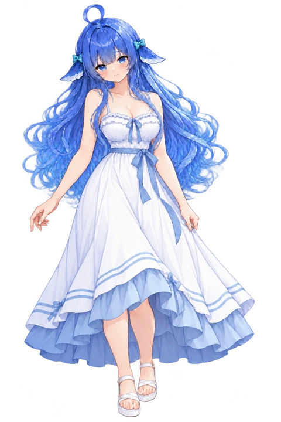
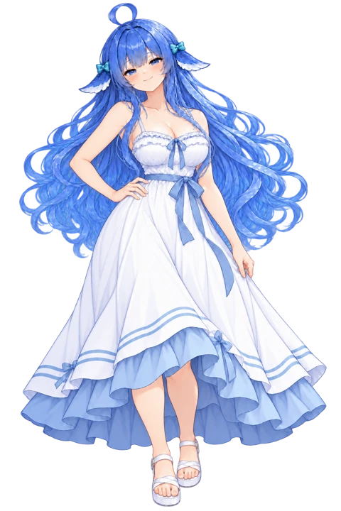
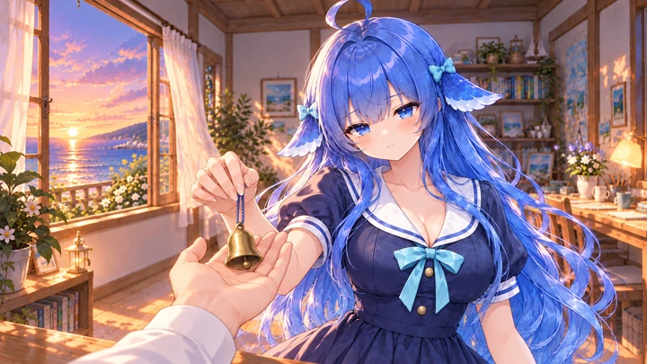
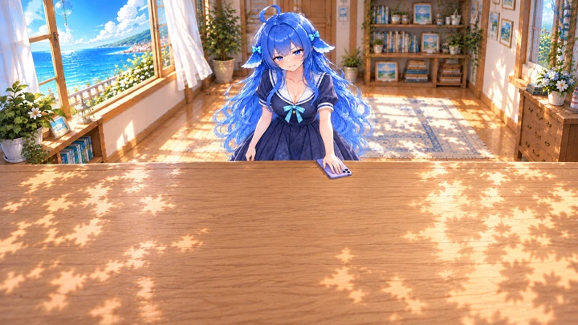
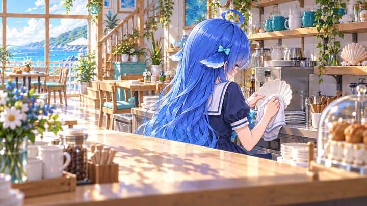
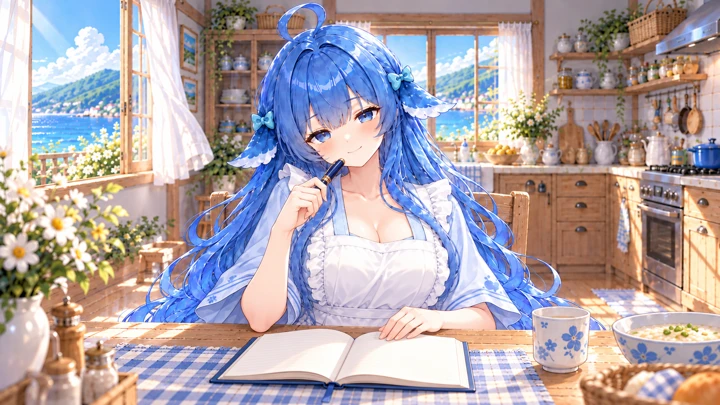
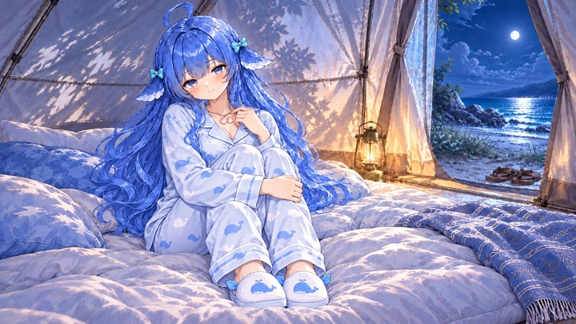
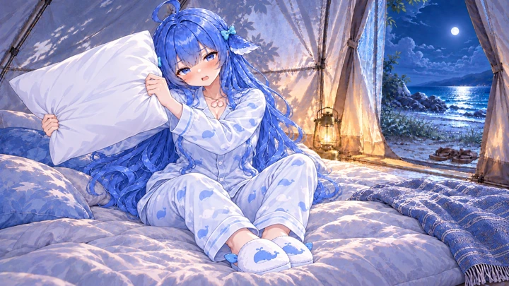

V01 常服·端桂花酸梅汤1536 × 2304 · 成图完成 / 人工待审双手端杯、主干与一对尾鳍可辨；保留原包字节。满杯只作端杯；201–204使用另附残液补充，不能表现拍水。原始PNG · 浅底 · 深底审核结果 待审核采用返修弃选
V02 常服·杯沿饮用1024 × 1536 · 成图完成 / 人工待审闭眼、倾杯、杯沿贴近口部，饮用语义成立。脸型和姿态相对V01有轻微漂移；仍须人工核对杯沿接触及液面。原始PNG · 浅底 · 深底审核结果 待审核采用返修弃选
V03 吊带裙·藏尾平常1536 × 2304 · 成图完成 / 人工待审完整裙摆、尾巴完全隐藏，空手站姿。排除捏李子、放李子与拉手走的节点。原始PNG · 浅底 · 深底审核结果 待审核采用返修弃选
V04 吊带裙·藏尾得意1024 × 1536 · 成图完成 / 人工待审叉腰、轻笑、藏尾得意；袖装为同款吊带裙。与V03的头部比例和裙摆需人工比对。原始PNG · 浅底 · 深底审核结果 待审核采用返修弃选
V05 吊带裙·接蓝贝壳手链1024 × 1536 · 成图完成 / 人工待审双手接住蓝白珠串、蓝贝壳与珍珠坠，物件有支撑。参考C07道具，未继承夕阳和旧尾纹；未表现完整递出者。原始PNG · 浅底 · 深底审核结果 待审核采用返修弃选
V06 吊带裙·抬腕偷看手链1024 × 1536 · 成图完成 / 人工待审左腕戴手链，右手指尖碰左腕；同组蓝贝壳坠保持。手腕与表情已经改变，非像素级局部编辑；尾巴静态。原始PNG · 浅底 · 深底审核结果 待审核采用返修弃选
V07 夜礁石·趴着闲聊1672 × 941 · 成图完成 / 人工待审躯干俯卧在礁石、双肘承重，尾巴沿岩缘落向水面。腿部部分遮挡，不据此声称验证隐藏身体；脚部赤足与常服鞋的转换须按场景确认。原始PNG · 一体场景 / 不透明审核结果 待审核采用返修弃选
V08 常服·微蹲捧海星1024 × 1536 · 成图完成 / 人工待审屈膝下蹲，双掌托住五腕海星，双脚和尾巴在画内。尚未完成放回水中的动作；落地高度需接入时调位。原始PNG · 浅底 · 深底审核结果 待审核采用返修弃选
V09 黄昏书房·铃铛落掌1672 × 941 · 成图完成 / 人工待审黄昏书房、铃铛落在玩家掌心，女主还轻持短绳。表现交接瞬间，不能声称绳已完全松开；未复制风铃整串贝壳。原始PNG · 一体场景 / 不透明审核结果 待审核采用返修弃选
V10 常服·坐着吃小鱼干1024 × 1536 · 成图完成 / 人工待审坐姿拿同一鱼干的头段和尾段，尾段贴近嘴部。透明坐姿需对齐实际座位，不能直接当站姿放置。原始PNG · 浅底 · 深底审核结果 待审核采用返修弃选
V11 常服·鱼干停嘴边1024 × 1536 · 成图完成 / 人工待审沿用两段鱼干与持握，眼睛睁大、口形停住。与V10表情差分需人工评估情绪强度；同样需座位对齐。原始PNG · 浅底 · 深底审核结果 待审核采用返修弃选
V12 常服·站着扣留手机1024 × 1536 · 成图完成 / 人工待审站姿扣留淡紫手机，另一手扶腕，委屈生气。原C12只用作手机参考；不照搬坐姿。原始PNG · 浅底 · 深底审核结果 待审核采用返修弃选
V13 书桌·手机扣下1672 × 941 · 成图完成 / 人工待审返修两次后手机与左掌在画面中部，手机屏幕朝下贴桌。采用更远机位；人物变小是给对白让位的取舍，实机遮挡仍待验收。原始PNG · 一体场景 / 不透明审核结果 待审核采用返修弃选
V14 夜礁石·救援后拍背1672 × 941 · 成图完成 / 人工待审男主前倾、女主近身，一掌拍背、一手扶肩，手臂关系可追踪。图中衣物有湿润光影；男主外观是本轮构图解释，需团队美术确认。原始PNG · 一体场景 / 不透明审核结果 待审核采用返修弃选
V15 常服·抱膝搁下巴1024 × 1536 · 成图完成 / 人工待审返修膝部歧义，裙布连续盖住两膝，下巴靠膝、双臂环抱。静态抱膝素材仍需与实际地面或座位对齐。原始PNG · 浅底 · 深底审核结果 待审核采用返修弃选
V16 常服·闭眼尝布丁1024 × 1536 · 成图完成 / 人工待审闭眼品尝，一手托小白碗、一手持银匙，焦糖布丁可辨。不可持续覆盖睁眼或板脸；焦糖外观主要适配后段，海盐段口味表现待确认。原始PNG · 浅底 · 深底审核结果 待审核采用返修弃选
V17 常服·端走布丁回望1024 × 1536 · 成图完成 / 人工待审同一白碗、布丁与银匙，侧背身回望、道具被抱住。2854起才端走；不用于先前未端走的对话。原始PNG · 浅底 · 深底审核结果 待审核采用返修弃选
V18 二楼窗桌·隔衣揉肩1672 × 941 · 成图完成 / 人工待审双手隔衣接触上肩，女主坐在椅垫上、前臂落桌。适用被按摩阶段；不覆盖按摩结束或双方换位。原始PNG · 一体场景 / 不透明审核结果 待审核采用返修弃选
V19 二楼窗桌·伏案睡着1672 × 941 · 成图完成 / 人工待审同场景伏案睡，脸侧靠交叠前臂，肩上按摩手已移开。没有展示尾巴圈住玩家手腕；只证明睡姿，不可当完整缠腕演出。2819对坐关系与此图不同，排除。原始PNG · 一体场景 / 不透明审核结果 待审核采用返修弃选
V20 柜台后·背身擦贝壳盘1672 × 941 · 成图完成 / 人工待审背向入口位于柜台内侧，两手分别持贝壳盘与擦布，午后窗光。凳和腿被柜台遮挡，不声称隐藏部分的姿态已验证。原始PNG · 一体场景 / 不透明审核结果 待审核采用返修弃选
V21 晨间餐桌·睡袍围裙坐姿1672 × 941 · 成图完成 / 人工待审睡袍围裙、晨间坐姿，粥碗与汤匙有支撑，延续厨房参考。餐桌道具靠下；实际对白框可能遮住碗底，接入时需选择适当显示方式。原始PNG · 一体场景 / 不透明审核结果 待审核采用返修弃选
V22 晨间餐桌·睡袍持笔批注1672 × 941 · 成图完成 / 人工待审同座位与服装，日记摊开，一手扶页、一手握笔靠近下巴。笔的动作与餐具已区分；日记靠画面下方，实机对白遮挡需验证。原始PNG · 一体场景 / 不透明审核结果 待审核采用返修弃选
V23 常服·抱木盒正面1024 × 1536 · 成图完成 / 人工待审小木盒由前臂托底，手扶盒盖，纸、桂花和贝壳可辨。主体在正面闭盒过渡，静态不能证明整个收纸动作。原始PNG · 浅底 · 深底审核结果 待审核采用返修弃选
V24 常服·门口背身抱木盒1024 × 1536 · 成图完成 / 人工待审肩髋一起转为背面，闭合木盒在身前可见，后裙遮住尾根。盒扣细节及转身前后尺寸需人工对照；不把侧脸写成完全背头。原始PNG · 浅底 · 深底审核结果 待审核采用返修弃选
V25 帐篷床上·睡衣抱膝护项链1672 × 941 · 成图完成 / 人工待审长袖长裤睡衣、两枚粉贝壳项链、抱膝与床垫支撑可辨。尾巴隐藏，不能据此声称已验证尾巴结构；部分对话需要额外表情。原始PNG · 一体场景 / 不透明审核结果 待审核采用返修弃选
V26 帐篷床上·举枕轻嗔1672 × 941 · 成图完成 / 人工待审沿用帐篷床位、睡衣项链，两手抓一只枕头举至肩旁，脸可见。属于准备轻丢瞬间；不表示整段投掷动画已制作。原始PNG · 一体场景 / 不透明审核结果 待审核采用返修弃选